ggplot(data = mpg) +
geom_point(mapping =
aes(x = displ,
y = hwy) )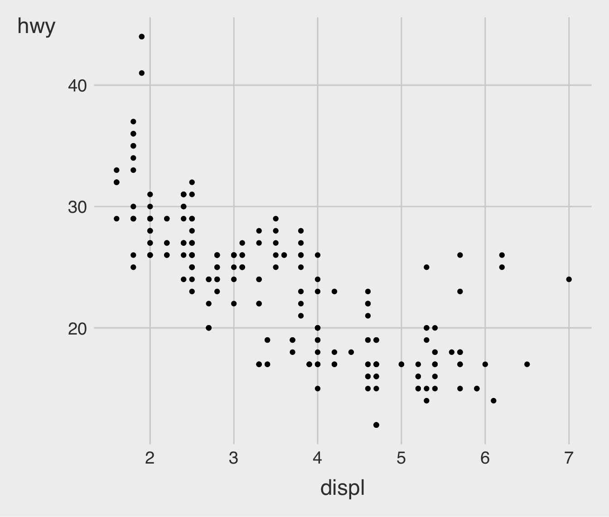
R Basics; Data Visualization
ggplot()option+command+I: to create a R chunk
command+shift+return: to run the code in the R chunk
command + shift + K: to render/knit the Quarto file
command + shift + C: to (de-)comment out a line in the Quarto file
Alt+Ctrl+I : to create a R chunk
Ctrl+Shift+Enter : to run the code in the R chunk
Ctrl + Shift + K: to knit/render the Quarto file
Ctrl + Shift + C: to (de-)comment out a line in the Quarto file
Mac
<-.Windows
<-.Home/End moves the blinking cursor bar to the beginning/End of the line.
Ctrl (command for Mac Users) + Z undoes the previous action.
Ctrl (command for Mac Users) + Shift + Z redoes when undo is executed.
Ctrl (command for Mac Users) + F is useful when finding a phrase (and replace the phrase) in the RScript.
Mac
command + Z undoes the previous action.
command + shift + Z redoes when undo is executed.
command + Q closes the current app.
Windows
Crtl + Z undoes the previous action.
Crtl + Shift + Z redoes when undo is executed.
Alt + F4 closes the current app.
rm(OBJECT) removes OBJECT.
rm(list = ls()) removes all the objects from the R environment.
You can also click the broom button at the top right corner in the Environment Pane.
Ctrl + L cleans the R console.

TRUE or FALSE.

A function can take any number and type of input parameters and return any number and type of output results.
R ships a vast number of built-in functions.
R also allows a user to define a new function.
We will mostly use built-in functions.
library(tidyverse)
# The function `str_c()`, provided by `tidyverse`, concatenates characters.
str_c("Data", "Analytics")
str_c("Data", "Analytics", sep = "!")We invoke a function by entering its name and a pair of opening and closing parentheses.
Much as a cooking recipe can accept ingredients, a function invocation can accept inputs called arguments.
We pass arguments sequentially inside the parentheses (, separated by commas).
A parameter is a name given to an expected function argument.
A default argument is a fallback value that R passes to a parameter if the function invocation does not explicitly provide one.
log()

\(\log_{10}\,(\,100\,)\): the base \(10\) logarithm of \(100\) is \(2\), because \(10^{2} = 100\)
\(\log_{e}\,(\,x\,)\): the base \(e\) logarithm is called the natural log, where \(e = 2.718\cdots\) is the mathematical constant, the Euler’s number.
\(\log\,(\,x\,)\) or \(\ln\,(\,x\,)\): the natural log of \(x\) .
\(\log_{e}\,(\,7.389\cdots\,)\): the natural log of \(7.389\cdots\) is \(2\), because \(e^{2} = 7.389\cdots\).
5 * abs(-3)
sqrt(17) / 2
exp(3)
log(3)
log(exp(3))
exp(log(3))abs(x): the absolute value \(|x|\)sqrt(x): the square root \(\sqrt{x}\)exp(x): the exponential value \(e^x\), where \(e = 2.718...\)log(x): the natural logarithm \(\log_{e}(x)\), or simply \(\log(x)\)a <- c(1, 2, 3, 4, 5)
b <- c(5, 4, 3, 2, 1)
a + b
a - b
a * b
a / b
sqrt(a)x <- c(1, 2, 3, 4, 5)
sum(x)
mean(x)
sd(x)sum() calculates the sum of all numbers in a vector.mean() calculates the arithmetic mean of the values in a vector. \[
\overline{x} = \frac{x_{1} + x_{2} + \cdots + x_{N}}{N}
\]sd() calculates the standard deviation (SD) of the values in a vector.
NULL and NA valuesc(c(), 1, NULL)
c("a", NA, "c")NULL is just an alias for c(), the empty vector.NA indicates missing or unavailable data.NULL and NA valuesis.na() is to check whether expression evaluates to NA.is.na(NA)
is.na(c())
is.na("A")"A" == NA evaluate to NA?orig_number <- 4.39898498
class(orig_number)
mod_number <- as.integer(orig_number)
class(mod_number)# TRUE converts to 1;
# FALSE does to 0.
as.numeric(TRUE)
as.numeric(FALSE)Sometimes we need to explicitly cast a value from one type to another.
as.character(), as.integer(), as.numeric(), and as.factor().NA.Complete path from the root directory to the target file or directory.
Independent of the current working directory.
Example (Mac): /Users/user/documents/car_data.csv
Example (Windows): C:\\Users\\user\\Documents\\car_data.csv
/Users/user, the relative path to car_data.csv would be documents/car_data.csvread_csv() function to read a comma-separated values (CSV) file.Download the CSV file, car_data.csv from the Class Files module in our Brightspace.
Find the path name for the file, car_data.csv from the File Explorer / Finder.
Provide the path name for the file, car_data.csv, to the read_csv() function.
uciCar <- read_csv('HERE WE PROVIDE A PATHNAME FOR car_data.csv')
View(uciCar)View()/view() displays the data in a simple spreadsheet-like grid viewer.
dim(uciCar)
nrow(uciCar)
ncol(uciCar)class(uciCar)
library(skimr)
skim(uciCar)dim() shows how many rows and columns are in the data for data.frame.nrow() and ncol() shows the number of rows and columns for data.frame respectively.skimr::skim() provides a more detailed summary.
skimr is the R package that provides the function skim().tvshows <- read_csv(
'https://bcdanl.github.io/data/tvshows.csv')data.frame: Variables, Observations, and Values

There are three rules which make a data.frame tidy:
ggplot()

In data visualization, you’ll turn data into plots.
In data transformation, you’ll learn the key verbs that allow you to select important variables, filter out key observations, create new variables, and compute summaries.
In exploratory data analysis, you’ll combine summary statistics (skim()), visualization, and transformation with your curiosity and skepticism to ask and answer interesting questions about data.
“The simple graph has brought more information to the data analyst’s mind than any other device.” John Tukey
Data visualization is the creation and study of the visual representation of data
Many tools for visualizing data – R is one of them
Many approaches/systems within R for making data visualizations – ggplot2 is one of them, and that’s what we’re going to use
A grammar of graphics is a tool that enables us to concisely describe the components of a graphic

library(tidyverse)
mpg
?mpgThe mpg data frame, provided by ggplot2, contains observations collected by the US Environmental Protection Agency on 38 models of car.
Q. Do cars with big engines use more fuel than cars with small engines?
displ: a car’s engine size, in liters.hwy: a car’s fuel efficiency on the highway, in miles per gallon (mpg).What does the relationship between engine size and fuel efficiency look like?
ggplotggplot(data = mpg) +
geom_point(mapping =
aes(x = displ,
y = hwy) )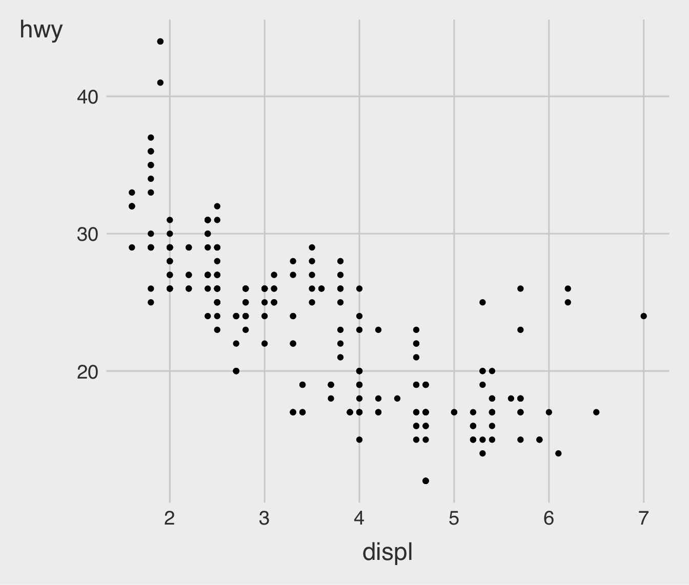
mpg, run the above code to put displ on the x-axis and hwy on the y-axis.ggplot(data = <DATA>) +
<GEOM_FUNCTION>(mapping = aes(<MAPPINGS>))data.frame, a geom function, or a collection of mappings such as x = VAR_1 and y = VAR_2.

In the plot above, one group of points (highlighted in red) seems to fall outside of the linear trend.

An aesthetic is a visual property (e.g., size, shape, color) of the objects (e.g., class) in your plot.
You can display a point in different ways by changing the values of its aesthetic properties.
color to the plotggplot(data = mpg) +
geom_point(mapping =
aes(x = displ,
y = hwy,
color = class) )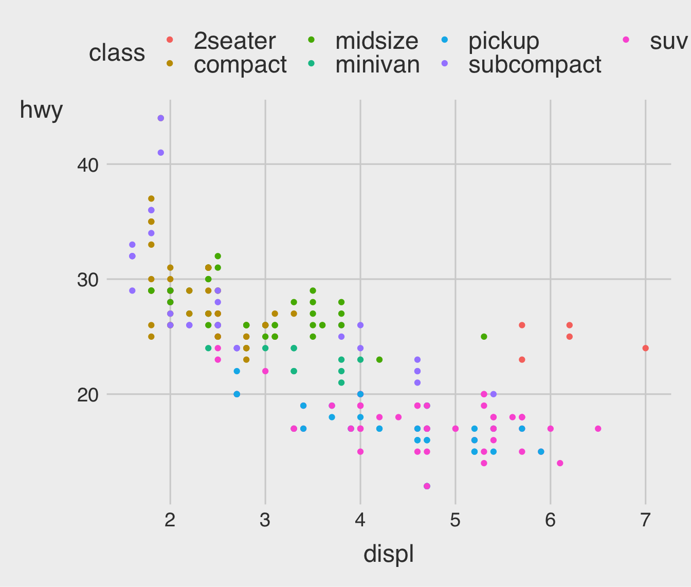
shape to the plotggplot(data = mpg) +
geom_point(mapping =
aes(x = displ,
y = hwy,
shape = class) )Warning: The shape palette can deal with a maximum of 6 discrete values because more
than 6 becomes difficult to discriminate
ℹ you have requested 7 values. Consider specifying shapes manually if you need
that many have them.Warning: Removed 62 rows containing missing values (`geom_point()`).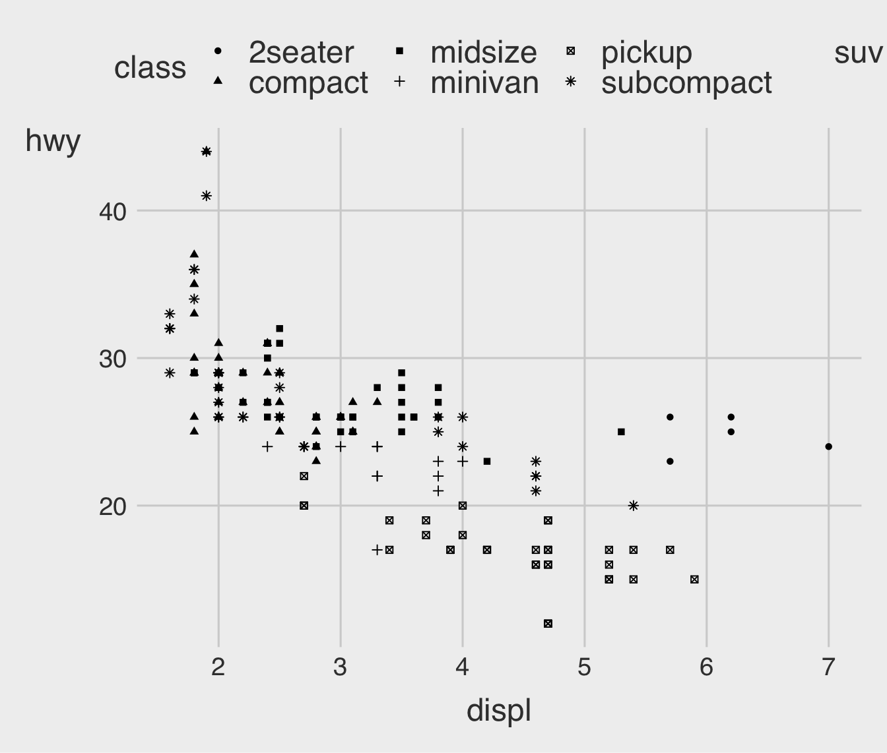
size to the plotggplot(data = mpg) +
geom_point(mapping =
aes(x = displ,
y = hwy,
size = class) )Warning: Using size for a discrete variable is not advised.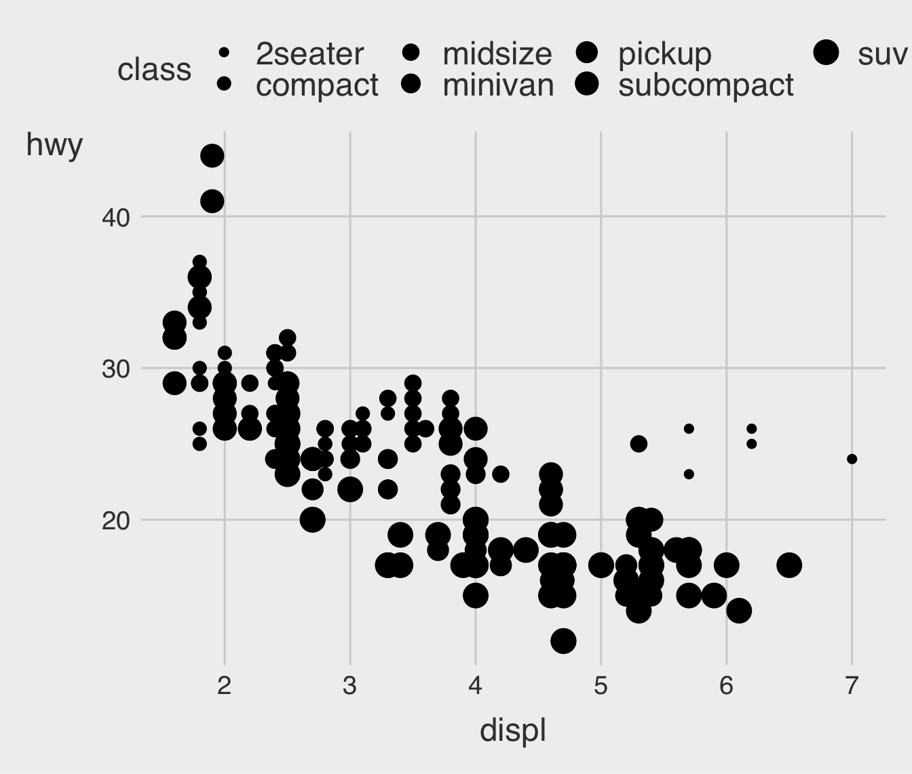
alpha (transparency) to the plotggplot(data = mpg) +
geom_point(mapping =
aes(x = displ,
y = hwy,
alpha = class) )Warning: Using alpha for a discrete variable is not advised.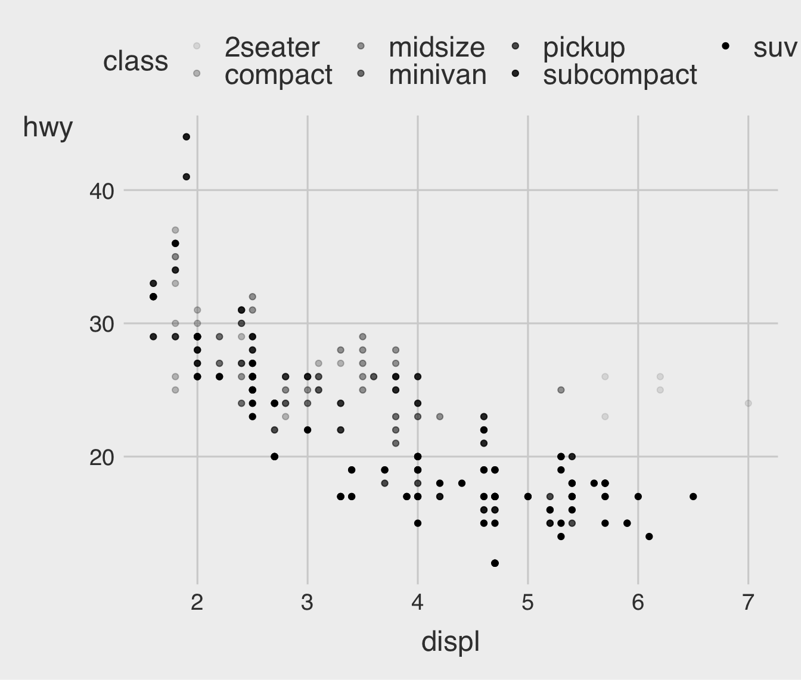
Many points overlap each other.
When points overlap, it’s hard to know how many data points are at a particular location.
Overplotting can obscure patterns and outliers, leading to potentially misleading conclusions.
We can set a transparency level (alpha) between 0 (full transparency) and 1 (no transparency).
alphaggplot(data = mpg) +
geom_point(mapping =
aes(x = displ,
y = hwy),
alpha = .2)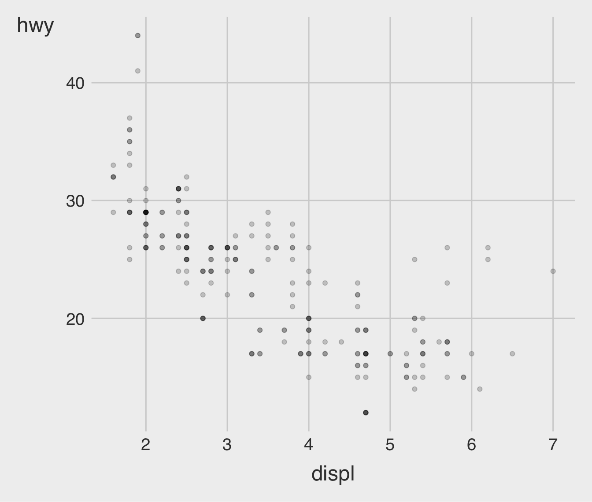
color to the plotggplot(data = mpg) +
geom_point(mapping =
aes(x = displ,
y = hwy),
color = "blue")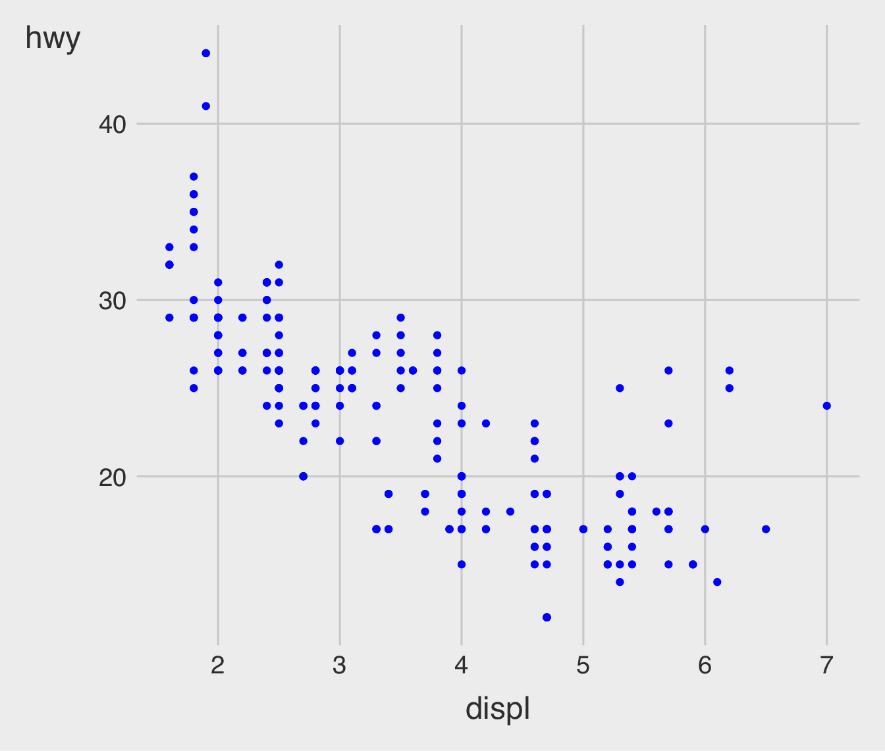

geom_ function; i.e. it goes outside of aes().
color as a character string.size of a point in mm.shape of a point as a number, as shown below.color to the plot?ggplot(data = mpg) +
geom_point( mapping =
aes(x = displ,
y = hwy,
color = "blue") )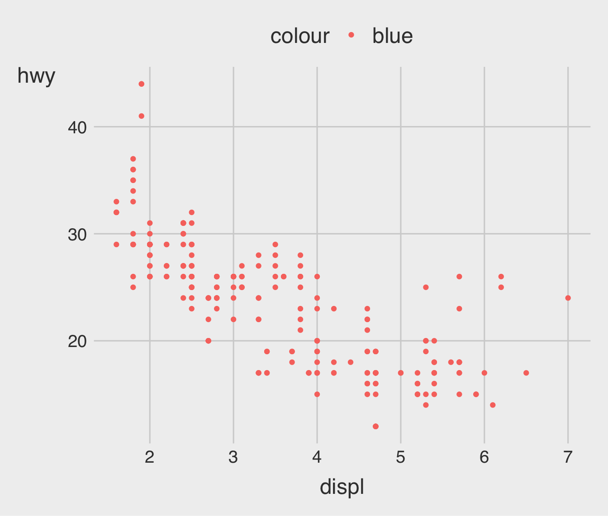
ggplot()ggplot(data = mpg)
+ geom_point( mapping =
aes(x = displ,
y = hwy) )ggplot2 graphics is to put the + in the wrong place.ggplot(data = mpg) +
geom_point(mapping =
aes(x = displ,
y = hwy),
alpha = .5) +
facet_wrap( . ~ class, nrow = 2)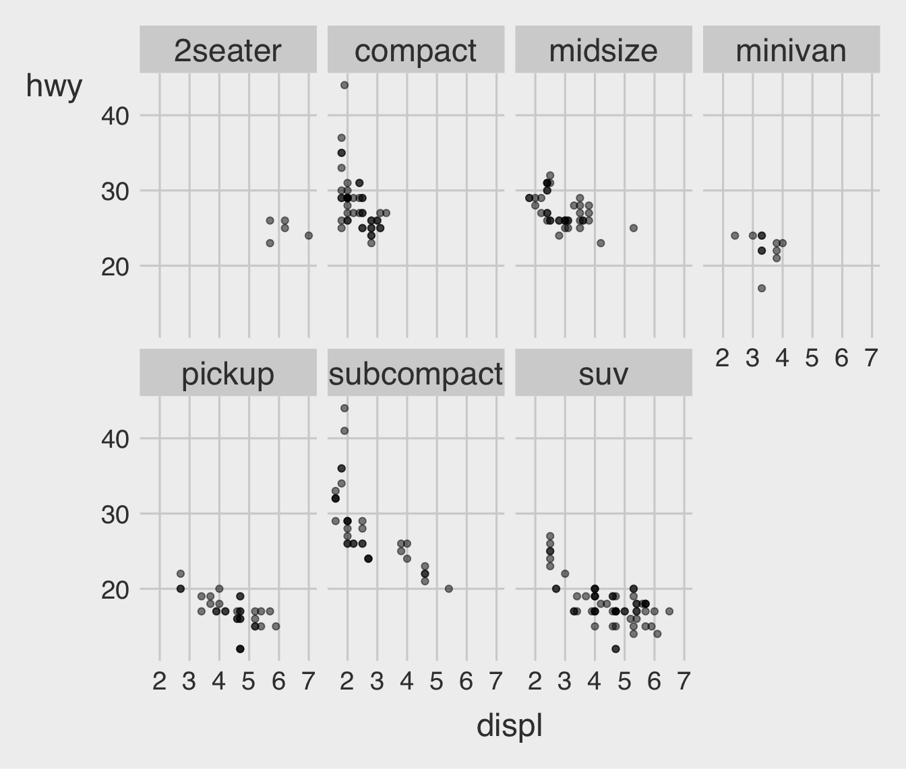
facet_wrap().facet_grid( VAR_ROW ~ VAR_COL ) to our plot call.facet_grid() is also a formula.
~.ggplot(data = mpg) +
geom_point(mapping =
aes(x = displ,
y = hwy),
alpha = .5) +
facet_grid(drv ~ cyl)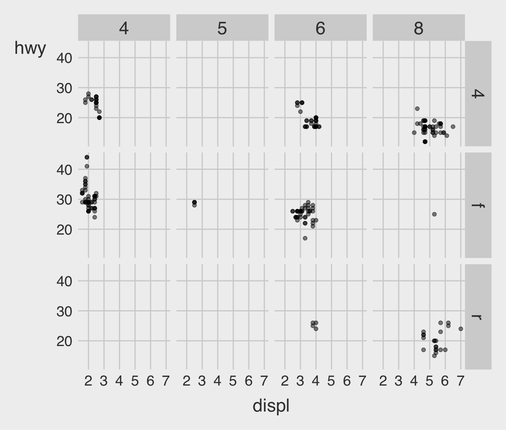
scales in facet_*() is whether scales is
"fixed", the default),"free_x", "free_y"), or"free").ggplot(data = mpg) +
geom_point(mapping =
aes(x = displ,
y = hwy),
alpha = .5) +
facet_grid(drv ~ cyl,
scales = "free_x")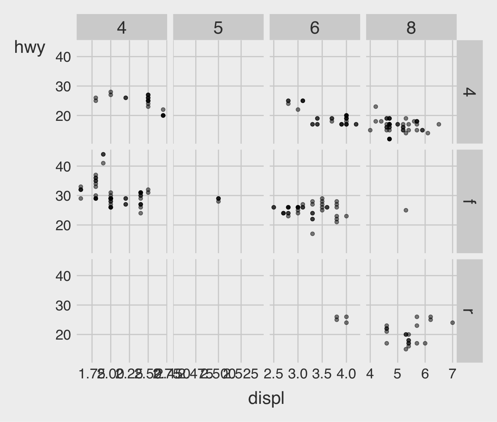